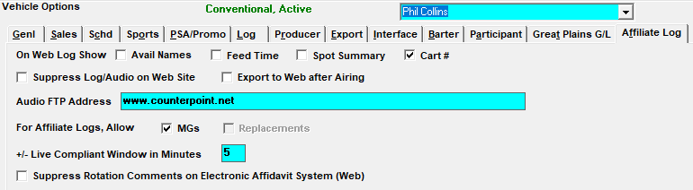

Affiliate Log

The choices for the “On Web Log Show” setting affects what appears on the Counterpoint Affidavit web log for the affiliates.
- If “Avail Names” is checked on, the avail name defined in the programming screen will appear on the log.
- If “Feed Time” is checked, Feed Date and Time columns will appear on the web log/affidavit.
- If “Spot Summary” is checked on, a summary of all spots to air will appear on the top of the Electronic Affidavit log screen.
- If the “Spot Summary” option is checked on and the “Avail Names” option is also checked on, the Spot Summary table will show In Program Spots, Outside Program Spots, and Total Spots (totals both sets of spot counts). Spots are counted as Outside Program when the pledge that they are from is set to status “11-Air Cmml Only” on the Agreement screen Pledge tab.
- If “Cart #” is checked on, the cart number will be shown on the web log, on the printed web log, and on the PDF web log that can be generated from the web log screen. When “Cart #” is not checked on, then the cart number field will be suppressed and it will not be shown on the web log or printed web logs.
Suppress Log/Audio on Website: If this option is checked, the “View Logs & Audio” button will not be present for this vehicle on the Counterpoint Affidavit system website, so affiliates of this vehicle will only have the option of submitting affidavits.
Export to Web After Airing: This option, when used, is designed to allow users to post aired times in the Post Log screen before exporting the spots to the Counterpoint Affidavit website, then, after the airing information has been posted, the log should be reprinted and then exported to the web. The basic procedure is as follows:
- Generate the Traffic log for the “Export to Web After Airing” vehicle.
- After the program airs, reconcile the aired times in Post Log.
- Reprint the Traffic log for the vehicle.
- Now export it to the web using the Counterpoint Affidavit system.
- The airing information shown on the web will use the reconciled aired times that were posted in Post Log, so the affiliates can simply mark “all aired” and submit the affidavit, without having to update the aired dates and times.
Audio FTP Address: You can enter an FTP address where your affiliates can pick up audio and other information. Your affiliates will be redirected to this site by clicking on the Audio button on the Counterpoint Affidavit System web log screen.
For Affiliate Logs, Allow MGs – Replacements: Enabling MGs allows web makegoods to be created (if allowed at the Affiliate Site Options level). The Replacements feature is not implemented.
+/- Live Compliant Window in Minutes: This setting will determine an affiliate’s station compliance when they are set to carry avails live. The system subtracts or adds a user determined amount of minutes to the pledged time, then compares that window of time to the aired time to determine station compliance.
Example: An affiliate’s pledge time is 6:10am-6:11am (two 30 second spots scheduled within the break). The time window time is set to 5 minutes. A spot airing between 6:05am and 6:16am will be station compliant since those times are within +/- 5 minutes of the 6:10-6:11am pledge time.
Any time increment can be entered (including 0), per vehicle. The system defaults to a 5 minute window.
Suppress Rotation Comments on Electronic Affidavit System (Web): This option, when checked, suppresses any copy rotation comments that were entered for rotations that include this vehicle in the rotation header from appearing on the web log and web affidavit.